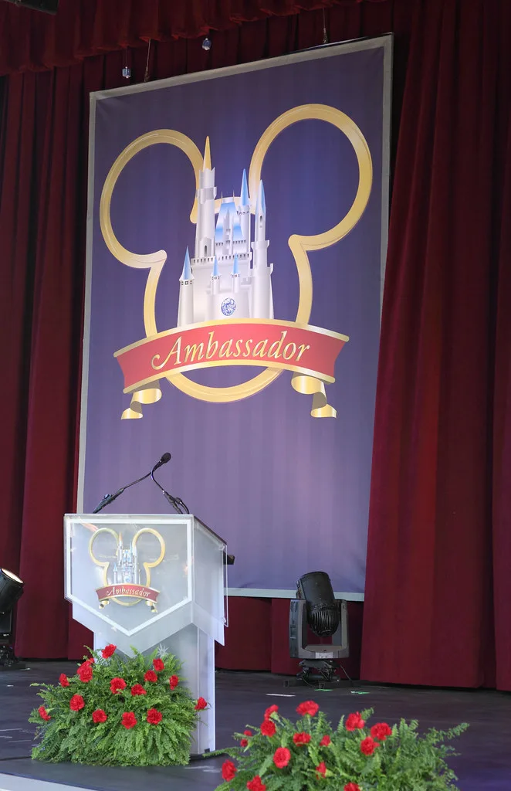

이재명 대통령 취임 1주년 기자회견…"대체불가 대한민국" 2년차 비전 제시
이재명 대통령이 8일 오전 10시 청와대 영빈관에서 취임 1주년 기자회견을 열고 지난 1년의 국정 운영을 돌아본 뒤 임기 2년 차의 비전과 과제를 밝혔다. '대체불가 대한민국'을 슬로건으로 내건 이번 회견은 약 100분간 진행됐으며, 내외신 취재진 160여 명이 자리를 채웠다. 회견은 민생·경제, 정치·외교·안보, 사회·문화 등 세 분야로 나눠 질의응답 방식으로 이뤄졌고, 대학 언론 소속 기자 2명도 참석해 청년 세대의 관심사를 직접 물었다.
이 대통령은 모두발언에서 지난 1년을 시민 중심 국정 운영의 기틀을 다진 시기로 규정하고, 2년 차에는 이를 실질적 성과로 연결하겠다는 뜻을 밝혔다. 구체적인 국정 목표를 제시하며 민생 회복과 경제 재도약에 방점을 찍었다는 평가가 나온다. 취임 이후 첫 대국민 기자회견이라는 점에서 정치권 안팎의 관심이 컸고, 회견 전부터 여야 모두 발언 내용을 예의주시해 왔다.

질의응답에서는 검찰 개혁 관련 입법 방향이 핵심 의제로 다뤄졌다. 검사의 보완수사권 폐지 등을 담은 형사소송법 개정안과 이른바 조작기소 특검법에 대한 입장을 묻는 질문이 이어졌고, 대통령은 수사와 기소를 분리하는 방향의 개혁 기조를 이어가겠다는 취지로 답했다. 지방선거 이후 시장의 관심이 쏠린 부동산 정책 방향에 대해서도 질문이 나왔으며, 실수요자 보호와 시장 안정을 함께 고려하겠다는 원론적 답변이 이어졌다는 게 현장을 지켜본 취재진의 전언이다.
외교·안보 분야에서는 장기화하는 중동 정세에 대한 대응, 고환율 국면에서의 거시경제 관리 방안, 대북정책 기조, 한일관계 현안 등에 대한 질문과 답변이 오갔다. 대통령은 대외 불확실성이 커진 상황에서도 원칙 있는 외교와 실용적 접근을 병행하겠다는 입장을 재확인한 것으로 전해졌다. 언론에 대한 언급도 눈에 띄었다. 이 대통령은 언론을 "민주공화국을 떠받치는 핵심 장치 중 하나"라고 표현하면서도 "그에 상응하는 책임도 져야 한다"며 일부 보도 관행의 개선을 촉구했다.

사회·문화 분야 질의에서는 청년 세대의 고용과 주거 불안을 다룬 대학 언론 기자들의 질문이 눈길을 끌었다. 대통령은 청년층이 체감할 수 있는 정책 성과를 만들어내는 것이 2년 차 국정 운영의 중요한 축이라는 점을 강조한 것으로 알려졌다. 이번 회견이 즉흥적인 자유 질의응답 형식으로 진행돼, 사전에 조율되지 않은 돌발 질문에도 대통령이 직접 답하는 장면이 여러 차례 연출됐다는 평가도 나온다.
정치권의 반응은 엇갈렸다. 여당은 회견을 통해 국정 운영의 안정감을 보여줬다는 평가를 내놓은 반면, 야당은 검찰 개혁 관련 답변이 원론에 그쳤다며 구체적인 실행 계획이 부족했다고 지적했다. 전문가들은 임기 2년 차가 실질적인 정책 성과를 축적해야 하는 시기인 만큼, 이번 회견에서 제시된 국정 목표가 실제 입법과 정책으로 이어지는지가 향후 국정 운영 평가의 관건이 될 것으로 내다봤다.
이번 회견은 사전에 질문지를 조율하지 않고 현장에서 손을 든 취재진에게 순서 없이 발언 기회를 주는 방식으로 진행돼, 예년보다 즉흥적이고 자유로운 분위기 속에 이뤄졌다는 평가도 뒤따랐다. 청와대 측은 회견에서 나온 국정 과제들을 향후 부처별 업무보고와 정기 국회 예산안 심사 과정에 구체적으로 반영해 나가겠다는 방침을 밝혔다. 임기 반환점을 향해가는 시점에서 이번 회견이 실제 정책 성과로 이어질지 여부에 국민적 관심이 쏠리고 있다.